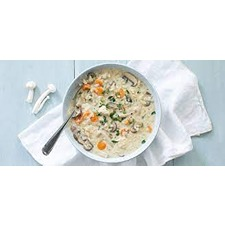

Ingrediënten:
- Kipfilet
- Champignons
- Ui
- Rijst
- Peterselie
Bereiding:
- Kook de kipfilet in water tot hij gaar is en trek het vlees uit elkaar.
- Fruit gesneden ui in een pan tot ze zacht zijn.
- Voeg champignons toe en bak tot ze zacht zijn.
- Voeg de gekookte kippenbouillon toe aan de pan samen met gekookte rijst en het uit elkaar getrokken kippenvlees.
- Laat de soep sudderen tot alle smaken goed zijn vermengd.
- Breng op smaak met zout, peper en gehakte peterselie.
- Serveer de kippensoep warm.
